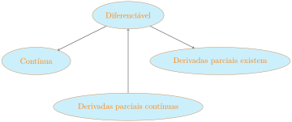

Apresentamos a seguir as principais definições e resultados sobre derivadas parciais, diferenciabilidade e plano tangente ao gráfico de uma função, sempre ilustrados com exemplos e contra-exemplos.
DefiniçãoA.4.1.(Derivadas parciais).
Sejam \(f\colon A\subseteq\R^2\to\R\) uma função e \((x_0,y_0)\) um ponto no interior 1 de \(A\text{.}\) As derivadas parciais de \(f\) em \((x_0,y_0)\) são dadas por
É frequente na literatura encontrar \(f_x(x_0,y_0)\) indicando \(\dfrac{\partial f}{\partial x}(x_0,y_0)\) e \(f_y(x_0,y_0)\) no lugar de \(\dfrac{\partial f}{\partial
y}(x_0,y_0)\text{.}\)
NotaA.4.2.
Na definição acima apenas uma das coordenadas varia, o que se generalizaria para derivadas parciais de funções com mais de duas variáveis. Veja abaixo uma figura que dá a interpretação geométrica das derivadas parciais num ponto.
Assim, \(\dfrac{\partial f}{\partial x}(x_0,y_0)=\tan \alpha\) e \(\dfrac{\partial f}{\partial y}(x_0,y_0)=\tan \beta\text{.}\)
Fixando uma das variáveis de \(f\text{,}\) digamos \(y=y_0\) (pense nela como uma constante real), temos a função de uma variável \(g(x)=f(x,y_0)\text{.}\) Se \(g\) derivável em \(x_0\text{,}\) então \(f_x(x_0,y_0)=g'(x_0)\text{.}\) Analogamente, se \(h(y)=f(x_0,y)\) é derivável em \(y_0\text{,}\) então \(f_y(x_0,y_0)=h'(y_0)\text{.}\)
NotaA.4.4.
Aqui aparece uma primeira diferença em relação ao cálculo em uma variável: lá toda função derivável num ponto é automaticamente contínua nesse ponto; aqui a existência das derivadas parciais em \((x_0,y_0)\) não garante a continuidade da função em \((x_0,y_0)\text{.}\) Veja um exemplo a seguir.
ExemploA.4.5.
A função \(f(x,y)=\begin{cases}
\dfrac{xy}{x^2+y^2},&(x,y)\neq (0,0);\\
\hfill 0,& (x,y)=(0,0)\end{cases}\) admite derivadas parciais em \((0,0)\text{,}\) mas não é contínua em \((0,0)\text{.}\)
Precisamos calcular as derivadas parciais pela definição, já que a regras de derivação do quociente não se aplica (denominador se anula no ponto estudado). Então
mostrando, de acordo com o Teorema A.3.8, que \(f\) não é contínua em \((0,0)\text{.}\)
Veja o gráfico de \(f\) e verifique que o comportamento ao longo dos eixos \(Ox\) e \(Oy\) não dertermina o que acontece em outras direções no domínio.
Isto mostra que precisamos de algo "mais forte" do que exigir apenas a existência de derivadas parciais sequeremos aproximar a função por algo linear numa vizinhança de um ponto, independentemente como nos aproximamos desse ponto (e não apenas paralelamente aos eixos coordenados, como ocorre nas derivadas parciais).
DefiniçãoA.4.7.(Diferenciabilidade e Plano Tangente).
Sejam \(f\colon A\subseteq\R^2\to\R\) uma função e \((x_0,y_0)\) um ponto no interior de \(A\text{.}\) A função \(f\) é diferenciável em \((x_0,y_0)\) se
Com isso, de maneira intuitiva, a definição de diferenciabilidade diz que a diferença entre o valor de \(f(x_0+h,y_0+k)\) e a sua estimativa por \(z(x_0+h,y_0+k)\) tende a zero "mais rapidamente" que a distância entre \((x_0+h,y_0+k)\) e \((x_0,y_0)\text{.}\) Isto é exatamente o que acontece para funções deriváveis a uma variável real.
ProposiçãoA.4.9.
Se \(f\colon A\subseteq\R^2\to\R\) é diferenciável em \((x_0,y_0)\text{,}\) então \(f\) é contínua em \((x_0,y_0)\text{.}\)
Demonstração.
Se \(f\colon A\subseteq\R^2\to\R\) é diferenciável em \((x_0,y_0)\text{,}\) então
que pelo Teorema A.3.10, garante a continuidade de \(f\) em \((x_0,y_0)\text{.}\)
Como vimos anteriormente a existência das derivadas parciais não garante sequer continuidade, quanto mais diferenciabilidade. Porém, se as derivadas parciais são bem comportadas, a situação é bem melhor:
TeoremaA.4.10.(Derivadas parciais contínuas).
Se \(f\colon A\subseteq\R^2\to\R\) é uma função, cujas derivadas pariciais existem e são funções contínuas em \((x_0,y_0)\text{,}\) então \(f\) é diferenciável em \((x_0,y_0)\text{.}\)
NotaA.4.11.
Usando a notação da Definição A.5.6, dizemos que se \(f\) é de classe \(\mathscr{C}^1\) em \((x_0,y_0)\text{,}\) então \(f\) é diferenciável em \((x_0,y_0)\text{.}\)
para algum \(\overline{y}\) entre \(y_0\) e \(y_0+k\text{.}\) Desta forma, usando o limite para verificar a diferenciabilidade de \(f\) em \((x_0,y_0)\) escreve-se
pois, em cada parcela, o segundo fator é limitado e a continuidade das derivadas parciais diz que o primeiro vai a zero. Verificamos isso para a derivada parcial em \(x\)
já que \(h\to 0\implies \overline{x}\to x_0\) e \(k\to
0\implies y_0+k\to y_0\text{.}\) O argumento é idêntico para a segunda parcela. Logo \(f\) é diferenciável em \((x_0,y_0)\text{.}\)
O exemplo a seguir mostra que o resultado acima é uma condição suficiente mas não necessária.
ExemploA.4.12.
A função \(f(x,y)=\begin{cases}
\dfrac{x^2y^2}{x^2+y^4},&(x,y)\neq (0,0);\\ \hfill 0,&
(x,y)=(0,0)\end{cases}\) é diferenciável na origem, mas uma de suas derivadas parciais não é contínua nesse ponto.
A continuidade de \(f\) segue de que \(\dfrac{x^2}{x^2+y^4}\) é limitado e \(y^2\to 0\) se \(y\to
0\text{.}\) As derivadas parciais são calculadas via regras de derivação fora da origem e pela definição na origem. Fazendo as contas, obtemos
pois cada parcela tem o segundo fator limitado e o primeiro tendendo a zero.
Encerramos esta guia de consulta rápida da teoria com um diagrama de implicações entre os conceitos de continuidade, existência de derivadas parciais e diferenciabilidade num ponto do interior do domínio de uma função.

FiguraA.4.13.Diagrama de implicações entre os conceitos
No diagrama acima, se não existe uma seta conectando dois conceitos é por que não há relação de causa e consequência entre eles. Procure, nos exemplos e exercícios resolvidos, situações que ilustram as ausências de setas (em algum ou nos dois sentidos) ligando os termos.